invo.LinearModels package¶
Submodules¶
invo.LinearModels.AbsoluteDualityGap module¶
Absolute Duality Gap Inverse Optimization
The absolute duality gap method for inverse optimization minimizes the aggregate duality gap between the primal and dual objective values for each observed decision. The problem is formulated as follows
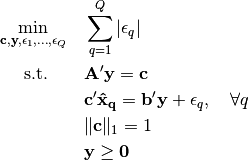
-
class
invo.LinearModels.AbsoluteDualityGap.AbsoluteDualityGap(**kwargs)¶ Bases:
objectFormulate an Absolute Duality Gap method of GMIO.
Parameters: - tol (int) – Sets number of significant digits. Default is 8.
- verbose (bool) – Sets displays. Default is False.
- force_feasible_method (bool) – If set to True, then will enforce the hyperplane projection method regardless of feasible points. Default is False.
- ban_constraints (list) – A list of constraint indices to force to zero when solving. Default is none.
Example
Suppose that the variables
Aandbare numpy matrices andpointsis a list of numpy arrays:model = AbsoluteDualityGap() model.FOP(A, b) model.solve(points) print (model.c)
-
FOP(A, b)¶ Create a forward optimization problem.
Parameters: - A (matrix) – numpy matrix of shape 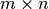.
- b (matrix) – numpy matrix of shape 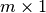.
Currently, the forward problem is constructed by the user supplying a constraint matrix
Aand vectorb. The forward problem is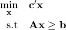
-
rho(points)¶ Solves the goodness of fit.
-
solve(points, **kwargs)¶ Solves the inverse optimization problem.
Parameters: points (list) – list of numpy arrays, denoting the (optimal) observed points. Returns: the optimal value of the inverse optimization problem. Return type: error (float) First check if all of the points are feasible, in which case we can just project the points to each of the hyperplanes. Let
 denote the centroid of the points. Then, we just solve
denote the centroid of the points. Then, we just solve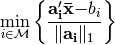
Let 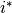 denote the optimal index. The optimal cost and dual variables are
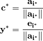
If not all of the points are feasible, then we need to solve an exponential number of optimization problems. Let 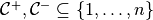 be a partition of the index set of length
n. For each possible partition, we solve the following problem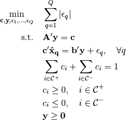
invo.LinearModels.RelativeDualityGap module¶
Relative Duality Gap Inverse Optimization
The relative duality gap uses the ratio of the primal objective value over the dual objective value of the forward problem as the measure of sub-optimality. This inverse optimization problem is formulated as
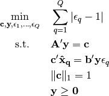
-
class
invo.LinearModels.RelativeDualityGap.RelativeDualityGap(**kwargs)¶ Bases:
objectFormulate an Absolute Duality Gap method of generalized linear inverse optimization.
Parameters: - tol (int) – Sets number of significant digits. Default is 8.
- verbose (bool) – Sets displays. Default False.
- ban_constraints (list) – A list of constraint indices to force to zero when solving. Default is none.
Example
Suppose that the variables
Aandbare numpy matrices andpointsis a list of numpy arrays:model = RelativeDualityGap() model.FOP(A, b) model.solve(points) print (model.c)
-
FOP(A, b)¶ Create a forward optimization problem.
Parameters: - A (matrix) – numpy matrix of shape .
- b (matrix) – numpy matrix of shape .
Currently, the forward problem is constructed by the user supplying a constraint matrix
Aand vectorb. The forward problem is
-
rho(points)¶ Solves the goodness of fit.
-
solve(points, **kwargs)¶ Solves the inverse optimization problem.
Parameters: points (list) – list of numpy arrays, denoting the (optimal) observed points. Returns: the optimal value of the inverse optimization problem. Return type: error (float) To solve a relative duality gap problem, we solve the three following optimization problems.
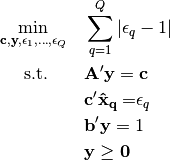
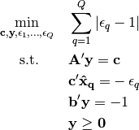
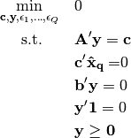
The optimal value of the relative duality gap problem is equal to the optimal value of the minimum of these problems. Let 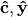 denote the optimal solution of that corresponding problem. Then, the optimal solution of the relative duality gap problem is
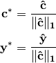
invo.LinearModels.pNorm module¶
Decision Space Inverse Optimization with a p-norm.
These models measure error in the space of decision variables, rather than objective values. In particular, these models aim to identify a cost vector that induces optimal decisions for the forward problem that are of minimum aggregate distance to the corresponding observed decisions. Any norm can be used in the decision space, but the key distinction is that the imputed optimal decisions must be feasible for the forward problem. A decision space inverse optimization problem is formulated as
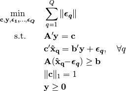
-
class
invo.LinearModels.pNorm.pNorm(**kwargs)¶ Bases:
objectFormulate a Decision Space (p-norm) method of GMIO.
Parameters: - tol (int) – Sets number of significant digits. Default is 8.
- p (int) – Sets p for lp norm. Can be integer or ‘inf’. Default is 2.
- verbose (bool) – Sets displays. Default is False.
- ban_constraints (list) – A list of constraint indices to force to zero when solving. Default is none.
Example
Suppose that the variables
Aandbare numpy matrices andpointsis a list of numpy arrays:model = pNorm(p=2) model.FOP(A, b) model.solve(points) print (model.c)
-
FOP(A, b)¶ Create a forward optimization problem.
Parameters: - A (matrix) – numpy matrix of shape .
- b (matrix) – numpy matrix of shape .
Currently, the forward problem is constructed by the user supplying a constraint matrix A and vector b. The forward problem is
-
optimal_points(points)¶ Get the projected optimal points.
Parameters: points (list) – list of numpy arrays, denoting the observed points. Returns: list of numpy arrays denoting the imputed optimal points. Return type: truePoints (list) Once an inverse optimization problem is solved and the forward model is completed, you can take a collection of observed data points and get the ‘imputed’ optimal points.
-
rho(points)¶ Solves the goodness of fit.
-
solve(points, **kwargs)¶ Solves the inverse optimization problem.
Parameters: points (list) – list of numpy arrays, denoting the (optimal) observed points. Returns: the optimal value of the inverse optimization problem. Return type: error (float) To solve a decision space inverse optimization problem, we solve the following convex problem for every constraint
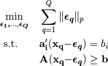
Module contents¶
Inverse optimization for Linear Models
This module contains a collection of linear inverse optimization models. It includes the ones covered by generalized inverse optimization, including the absolute and relative duality gap, and p-norm methods. As we add new models, we should include them in the __main__ file.